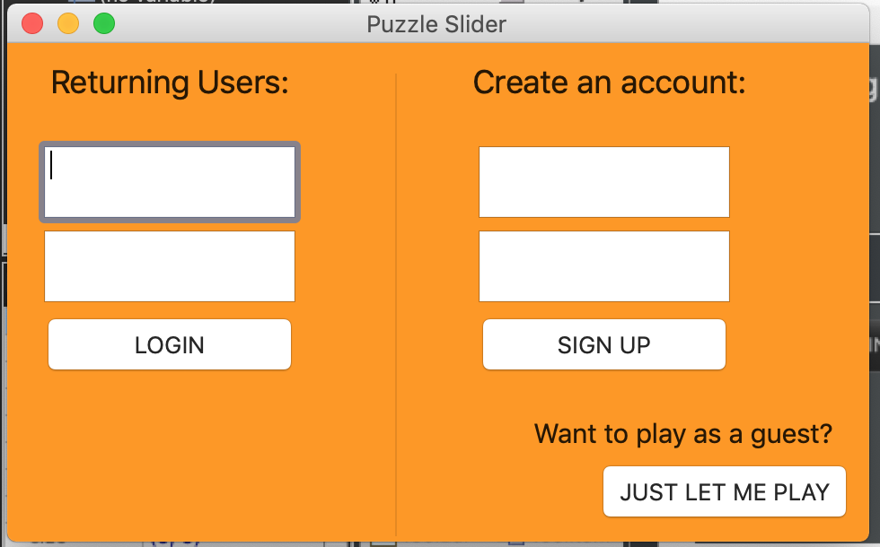

This section describes your working code and provides links to it.
For elaboration 1 we have completed boilerplate application code to ensure that automated testing and build infrastructure is working. To see documentation for this working please refer to our README.md documentation.
For elaboration 2 we created boilerplate class code for each package's classes. The package package diagram that we used was developed as part of our UML Diagramming.
We were able to complete our first GUI for the login system. 
As a part of this system we also implemented the use of a Derby JDBC driver to store user login data in a Derby database. Output from automated testing shows the ability for us to connect to the database, create tables, and add/validate users.